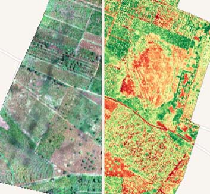

Menu
Menu
Home
REMOTE SENSING PROJECTS
Settlement Growth of Goma West
Monitoring the Renaturation of the River Aa in Muenster, Germany.

Use of Drones for Agriculture Monitoring.
Urban Sprawl of Ibadan, Nigeria
Optical and RADAR Image Classification
Building Population Estimation in Boromata Village